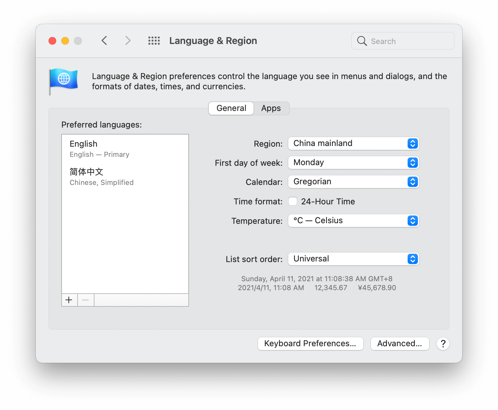

iOS本地化日期、时间、货币数字（超全）
不同的国家、地区对一些诸如日期、时间、数字、货币等方面有不同的表述方式，为了更好的满足当地人的使用习惯和习俗，App必须做好这些方面的国际化工作。这是一项重要且复杂的工作，希望通过这篇可以让你对这些内容有一个全面的了解。
到公众号【iOS开发栈】学习更多SwiftUI、iOS开发相关内容。
之前两篇关于iOS国际化的文章讨论了关于使用IB将固定UI国际化和使用NSLocalizeString宏将可变文本国际化，这篇文章将集中于处理一些日常表述方面的国际化问题，比如日期、时间、数字、货币等。
首先要明确一点，这里的本地化并不是完全依赖于语言的，也就是说同样的语言在本地化方面也会有不同的表现形式。比如说意大利和美国都是英语国家但是在美国数字使用的“,”分割，而意大利使用的是“.”，又对于货币符号就更多了。
在iPhone和Mac上都有地区的选择，在对应页面的下方就是一些示例。

在开发过程中还有一个快速修改所在区域的小技巧，在Edit Scheme -> Options中修改App Region然后重新运行项目就可以修改所在区域了，这样就不需要每次到系统设置中去修改区域。
获取当前系统的本地化信息
- 获取Locale对象
可以通过两种方法获取到用户的本地化对象Locale.current和Locale.autoupdatingCurrent，官方文档说autoupdatingCurrent会随着系统设置的更改而改变，current是固定的。
但是我并没有发现这两者的区别，当用户修改系统语言或者所在地区以后所有app都会重启，不管使用那种方式都会重新获取最新的系统设置，而如果只是修改日历的话app不会重启但是autoupdatingCurrent方法获取到的locale也不会改变。
我不知道这是由于官方文档没有及时更新还是由于我没有找到这两个方法之间的区别，如果你知道他们的区别麻烦告诉我。
- 获取Locale对象包含的本地化信息
本地化信息会随着语言、地域、文化的不同而不同，总共包含了大概十几个条目，下面列举几个比较常用的条目并且以大陆地区为例来给出结果。
1 | // 以中国大陆地区为例 |
- 获取当前语言和方言
1 | let languageId = Bundle.main.preferredLocalizations.first! // zh-Hans |
这里的languageId是开发者需要的而不应该让用户看到，languageName是展示给用户的。
格式化日期时间
- 使用预设的格式
1 | let date = DateFormatter.localizedString(from: Date(), dateStyle: .short, timeStyle: .short) // 2021/4/11 下午9:15:16 |
根据当前所在的Locale，将当前时间格式化，其中日期使用“短格式”、时间使用“中格式。下面是官方文档上面的一个对不同格式的示例：
| Style | Date | Time | Description |
|---|---|---|---|
| Short | 6/10/13 | 11:03 AM | 只有数字 |
| Medium | Jun 10, 2013 | 11:03:15 AM | 简短文本 |
| Long | June 10, 2013 | 11:03:15 AM PDT | 完整文本 |
| Full | Friday, June 10, 2013 | 11:03:15 AM Pacific Daylight Time | 更多细节 |
下面是在不同的语言和地区中中长和短文本的时间格式：
| Language (Region) | Medium style | Short style |
|---|---|---|
| English (United States) | Jun 6, 2013 | 10:14 AM |
| French (France) | 6 Jun 2013 | 10:14 |
| Chinese (China) | 2013年6月6日 | 上午10:14 |
- 使用自定义的日期和时间格式
1 | let dateFormatter = DateFormatter() |
分两种方式创建formatterString，当使用fromTemplate:options:locale时得到的dateString是4月11日；直接使用普通文本时得到的dateString是4月11。
下面是几个不同语言和地区分别在使用和不使用地区格式化下的日期：
| Language (Region) | Date using format string “MMM d” | Date using templat “dMMM” |
|---|---|---|
| English (United States) | Nov 13 | Nov 13 |
| French (France) | nov. 13 | 13 nov. |
| Chinese (China) | 11月13 | 11月13日｜ |
数字格式化
- 使用预设样式格式化数字
1 | let myNumber: NSNumber = 234231.231 |
使用预设格式进行格式化数字时，在不同的语言和地区下的例子：
| Style | Formatted string, English (United States) |
Formatted string, Language (Region) |
|---|---|---|
| Decimal（小数） | 1,234.56 | 1.234,56 Italian (Italy) |
| Currency（货币） | $1,234.56 | ¥1,234.56 Chinese (China) |
| Percent（百分数） | 123,456% | Arabic (Egypt) |
| Scientific（科学计数法） | 1.23456E+03 | 1,23456E3 Italian (Italy) |
| Spell Out（读） | one thousand two hundred thirty-four point five six | 一千二百三十四点五六 Chinese (China) |
- 获取用户输入的数字
1 | let formatter = NumberFormatter() |
使用系统当前的语言和地区把用户输入的带有当地特色的数字字符串转化成Number格式。其中isLenient表示是否允许格式不完全按照标准格式，例如如果这里使用formatter.isLenient = false，当输入字符串只要不是标准的1,234,123.23而是1,23,4123.23或者1,234123.23就会返回nil。
关于日历的本地化
不同地区之间的纪年方法有很大的差别，日本的年代变化很快（他们还在用天皇纪年，就像咱们中国的封建社会）而公历或者农历的年代变化就相对较慢，而有的地区一年有13个月，不同的日历对每周的第一天定义也不同（周六、周日、周一都有）。要处理这么复杂多变的日历相关问题就一定要用到Calender类。
获取用户当前使用的日历使用Calendar.current。
获取一个日期的组成部分：
1 | let calendar = Calendar.current |
当使用日本历或者佛教日历的时候，每次获取或者设置年份一定要同时获取或者设置年代。
更多关于日历的内容可以参考一下官方文档
Locale和时区相关的通知
要及时的获取Locale或者时区变化的通知可以监听NSCurrentLocaleDidChangeNotification和NSSystemTimeZoneDidChangeNotification通知。
获取通知在用户进行跨国长途旅行的时候非常有用，当用户时区改变后app能够及时变化可以给用户一个非常棒的体验。
到公众号【iOS开发栈】学习更多SwiftUI、iOS开发相关内容。
总结
想要很完善的本地化一个App是不容易的，不仅要把文字本地化还要把日期、时间、日历、数字等内容本地化，这些内容在一个app中是无处不在的，这就要求我们要随时记着自己是在做一个国际化的App。为了能给全世界各地的用户一个更好的使用体验，尽力做好这项工作吧。